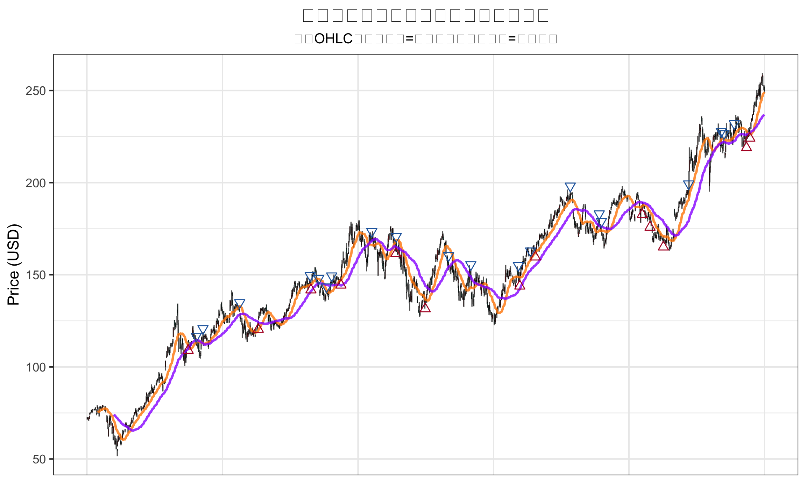
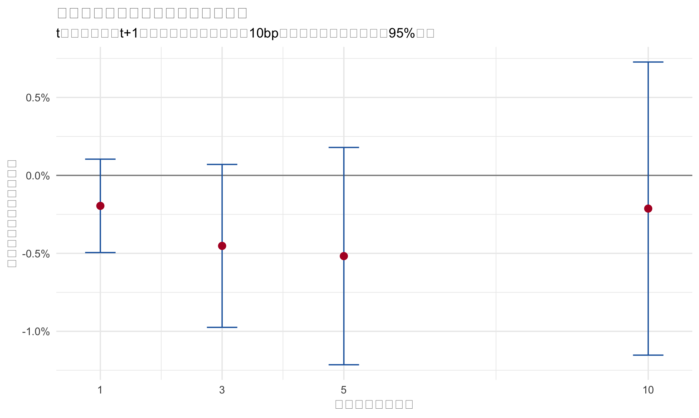

蜡烛图与移动平均线
问题现场
价格“在均线附近出现吞没”听起来明确，实际上至少隐藏三项选择：哪种均线、哪个周期、附近多近。均线是滞后平滑器，不是动态支撑的自动证明。只有把这些选择预先量化，才能判断它是否提供上下文。
学习目标
- 比较SMA、EMA和加权均线的权重结构；
- 定义价格邻近均线与均线方向；
- 将吞没形态与20/50日均线组合；
- 避免全样本优化均线周期；
- 检验均线过滤对换手和样本量的影响。
经典形态与市场机制
简单移动平均线给窗口内观测相同权重；指数移动平均线对近期价格权重更高；加权移动平均线可使用线性或其他预设权重。短均线对新信息响应快但噪声大，长均线平滑但滞后。双均线交叉描述相对趋势速度，而不是即时因果。
形态与均线常有两种组合：反转思路关注价格远离或回到均线；趋势跟随思路关注价格回踩上行均线后出现看涨形态。本章采用中性问题——吞没形态是否发生在20或50日均线的1.5%范围内——不预设一定增强收益。
可计算定义
SMA与EMA分别为：
\[ SMA_{n,t}=\frac1n\sum_{i=0}^{n-1}C_{t-i},\qquad EMA_{n,t}=\alpha C_t+(1-\alpha)EMA_{n,t-1},\quad \alpha=\frac{2}{n+1}. \]
邻近条件为 \(|C_t/MA_{n,t}-1|\le0.015\)。主信号是吞没方向与SMA20或SMA50邻近条件的交集。均线包含当日收盘是允许的，因为信号也在收盘后完成，交易从次日开盘开始。
研究设计
对照组为所有吞没事件，处理组为邻近均线事件。稳健性一：SMA替换为EMA；稳健性二：距离阈值改为1%和2%；稳健性三：按均线斜率同向/反向分层。评价除收益外还包括事件数、换手和平均持有期重叠。
R实现
panel <- lab_read_data()
sma_20 <- eTTR::add_sma(panel, n = 20)
ema_20 <- eTTR::add_ema(panel, n = 20)
features <- lab_features()
near_ma <- abs(features$close / features$sma_20 - 1) <= 0.015 |
abs(features$close / features$sma_50 - 1) <= 0.015
signal_r <- ifelse(near_ma, lab_base_signals()$engulfing, 0)eTTR 使用长格式数据并把指标列追加到原表，适合多标的面板；本章辅助函数则为单标的事件研究保留明确列名。
Python实现
from python.candlestick_lab import load_data, pattern_signal
import numpy as np
from ettr import ema, sma
panel = load_data()
panel_sma = sma(panel, n=20)
panel_ema = ema(panel, n=20)
sma_20 = panel["close"].rolling(20).mean()
sma_50 = panel["close"].rolling(50).mean()
near_ma = (panel["close"].div(sma_20).sub(1).abs() <= 0.015) | (
panel["close"].div(sma_50).sub(1).abs() <= 0.015
)
signal_py = np.where(near_ma, pattern_signal("engulfing").to_numpy(), 0)正式双语复现应核对 eTTR 追加列名与预热缺失值，不凭函数名称假设输出结构。
图形诊断

观察均线斜率、价格从哪一侧接近以及两条均线是否纠缠。横盘时频繁穿越均线会产生大量“邻近”，并不代表支撑有效。
证据与稳健性
| sample | events | mean_gross | mean_net | win_rate | ci_low | ci_high |
|---|---|---|---|---|---|---|
| 全部事件 | 112 | -0.0042 | -0.0052 | 0.4375 | -0.0121 | 0.0018 |
| 非重叠事件 | 95 | -0.0036 | -0.0046 | 0.4316 | -0.0119 | 0.0027 |

过滤后事件数显著减少，均值变化必须结合区间解释。周期与阈值网格要保持平滑性检查：若19日有效而20、21日均无效，通常是过拟合。样本外检验应锁定均线类型、周期和距离。
AI协作实验室
AI生成不同均线的权重表和边界测试，检查EMA初始化、分组滚动和日期排序。约束是不对全样本搜索最佳周期。验收包括R/Python前100个有效均线值的最大绝对差、每个代码独立滚动以及预热期缺失数。
失效条件与常见误区
- 把均线附近自动解释为支撑；
- 全样本搜索大量周期后只报告最佳值；
- 多标的数据未按代码分组滚动；
- 忽略EMA初始化差异；
- 过滤后样本很小仍报告精确胜率。
本章小结与练习
移动平均线提供趋势与位置的低维表示，但其周期、类型和距离均是研究参数。形态与均线结合只有在样本外仍稳定时才有意义。
- 比较SMA20、EMA20附近吞没事件的日期差异。
- 完整报告1%、1.5%、2%距离阈值的结果。
- 把均线斜率加入条件，说明规则复杂度如何增加。
进入下一章前，请确认你能解释均线在信号时点的可用性，并能区分“靠近均线”与“均线提供支撑”。